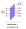
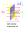

Die Stromstärke $I$ ist die Ladung $\text{d}q$, die in einer Zeit $\text{d}t$
durch eine senkrecht zur Stromrichtung orientierten Fläche $\text{d}\vec{A}_\perp$
tritt.
$$\mathbf{I = \frac{\text{d}q}{\text{d}t}}$$

Für einen zeitlich konstanten und homogenen Strom ist die durch eine
Querschnittsfläche tretende Ladung
$$\text{d}q = A_\perp \cdot v \cdot \text{d}t \cdot n \cdot q$$
Woraus die Stromstärke
$$\mathbf{I = A_\perp\cdot v\cdot n\cdot q}$$
folgt.
Stromdichte
Die Stromdichte $\vec{j}$ ist das Verhältnis der Stromstärke $\text{d}I$ und
der senkrecht zur Stromrichtung $\vec{e}_I$ orientierten Fläche $\text{d}A_\perp$.
$\vec{j}$ zeigt in Richtung des Stroms $\vec{e}_I$.
$$\vec{j} = j \cdot \vec{e}_I = \frac{\text{d}I}{\text{d}A_\perp} \cdot \vec{e}_I$$

Eine weitere Formulierung ist
$$j = \frac{I}{A_\perp} = n\cdot q\cdot v$$
Stromstärke aus Stromdichte berechnen
Aus dem Ausdruck für die Stromdichte ergibt sich
\begin{align*}
j &= \frac{\text{d}I}{\text{d}A_\perp} \\
\text{d}I &= j \cdot \text{d}A_\perp \\
\text{d}I &= j \cdot \text{d}\vec{A} \cdot \vec{e}_I \\
\text{d}I &= \vec{j} \cdot \text{d}\vec{A}
\end{align*}
Bezüglich einer Fläche $A$ ist die Stromstärke $I$
$$\mathbf{I = \int_A \vec{j}\ \text{d}\vec{A}}$$
bzw. bezüglich einer geschlossenen Oberfläche
$$I = \oint_{\partial V} \vec{j}\ \text{d}\vec{A}$$